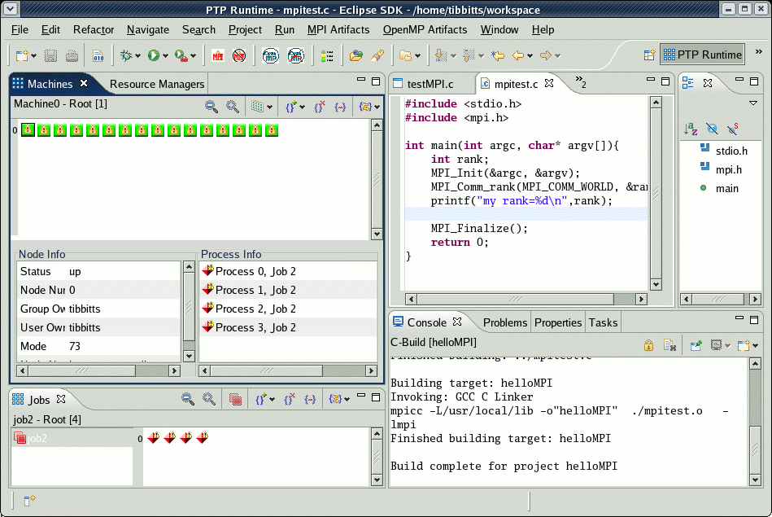
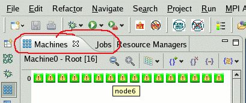
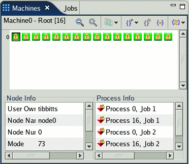
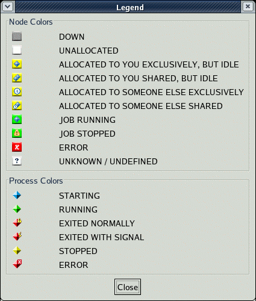

PTP Runtime Perspective
PTP Runtime PerspectiveViews in this perspective include the Machines view, and the Jobs view.
PTP Runtime PerspectiveThe PTP Runtime perspective shows the status of parallel machines that you have access to, parallel jobs that you have launched, and details about processes that are part of a running job. You will not normally see any changes in the PTP Runtime views unless you have a job running, or the node status of a machine changes. See launching parallel programs for details on how to launch a parallel program.
To open the PTP Runtime perspective, select Window > Open Perspective > Other ..., and then select PTP Runtime.
The PTP Runtime Perspective provides three views:

Select between the Machines or Jobs view. You can also tile the Machines and Jobs view side-by-side.

Machines viewThe Machines view displays all the machines you have access to. You can switch between machines by selecting from the dropdown menu  in the Machines view toolbar:
in the Machines view toolbar:

A machine is represented as a rectangular grid of nodes. Nodes are logical groupings of computational resources that may or may not represent actual hardware "nodes". A node can be in one of ten states as shown below. The state of a node can change at any time, depending on the activity on the machine.
|  | Node icons indicate the status of the node:
|
Double-clicking on a node icon will display more information about the node in the Node Info and Process Info panels. This includes textual attributes associated with the node and a list of the processes that have been or are running on the node.

In the node detail below, the Node Info panel shows information about the state and access permissions to the node. The Process Info panel shows four processes that have exited and one process that is still running.

Each node in the machines view is indicated by an icon.
The icons and their meanings are shown in the Legend dialog,
available from the  legend icon in the toolbar.
legend icon in the toolbar.

You can also see information on a particular node by hovering the mouse pointer over a node.

To display information on a particular node, double-click on the node icon and the Node info box will be populated with information about that node. Here the Node info box and the hover information on the node are both shown.

Double-clicking on a node will also show the processes running on the node, or after a job has terminated, the processes that ran on the node.

Jobs ViewThe Jobs view provides a list of the current parallel jobs. Both running and completed jobs are listed. The jobs (and job status) are shown in the left pane, and the processes running in the selected job are shown in the right pane. Selecting a job shows the processes belonging to the job.

As shown above, hovering over a process shows the MPI task ID and process ID.
Again, the icons and their meanings are shown in the Legend dialog,
available from the
legend icon in the toolbar.
The Job and process icons are listed again here:
| Job status icon | Process state icon |
 Currently running job Currently running job
 Job under debug Job under debug

 Finished job Finished job
|
 process starting process starting
 process running process running
 process exited normally process exited normally
 process exited with signal process exited with signal
 process stopped process stopped
 process error process error
|
To terminate a running job, select the job from the left pane of the Jobs view and click on the Terminate button shown below.

Process Detail ViewDouble-clicking on a process (either in the right pane of the Jobs view, or in the Process Info panel of the Machines view) brings up a Process Details view for that process.

The process details page includes the following information:
The Program output window shows the standard output generated by this process. In the legend box above, the debug symbol is used to show that the job is being debugged (i.e. that the debugger has been launched for the job). It could be referred to as 'Job being debugged'.